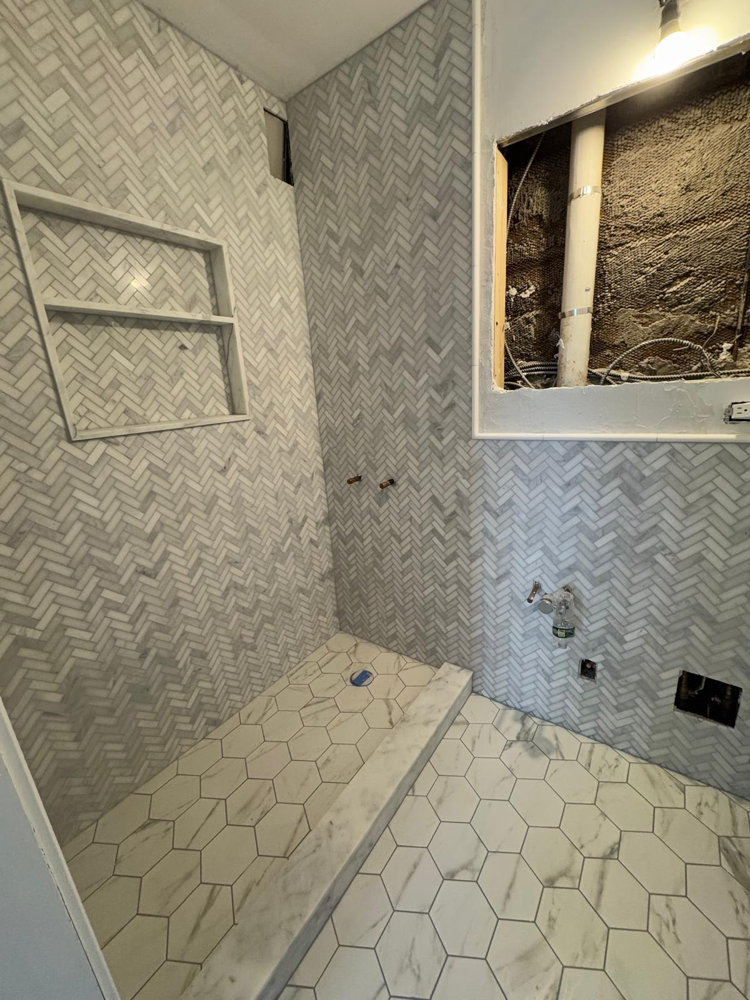
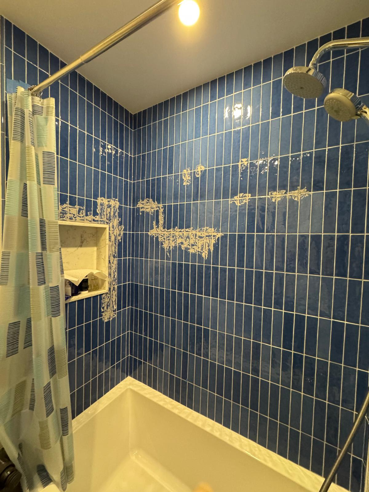

If you are planning a bathroom renovation in Manhattan, one of the most important decisions you will make is choosing the right tile. Bathroom tile sets the tone for the entire space, affects how large or small the room feels, and determines how well your investment holds up over time. For NYC apartment owners, the stakes are even higher. You are often working with compact layouts, strict building requirements, and the expectation of premium finishes that match the price of city living. This guide will walk you through the most popular bathroom tile options for New York City apartments and help you make a confident choice before your renovation begins.
Manhattan bathrooms are not like bathrooms in the suburbs. Space is limited, natural light can be scarce, and every design choice has an outsized impact on the look and feel of the room. A well chosen tile can make a small bathroom feel open and airy, while the wrong selection can make it feel cramped and dated. Beyond aesthetics, bathroom tile in NYC apartments must be durable, moisture resistant, and compatible with your building's structural requirements. Many co op and condo boards also have guidelines about renovation materials, so working with an experienced contractor who understands building coordination in Manhattan is essential.

Marble remains the most sought after tile material for high end bathroom renovations in New York City. Its natural veining creates a one of a kind look that elevates any space, and it pairs beautifully with frameless glass shower doors and polished chrome fixtures. Carrara, Calacatta, and Statuario are the most popular varieties among Manhattan homeowners, each offering different levels of veining and contrast.
One of the most striking ways to use marble in a bathroom renovation is in a herringbone pattern on shower walls. This layout adds visual texture and a sense of movement that transforms even a standard shower stall into a showpiece. Paired with hexagonal marble floor tiles, the combination creates a cohesive and sophisticated look that feels both classic and contemporary.

Marble does require some care. It is a porous stone, so sealing is important to protect against water stains and etching. Your installer should apply a quality sealant during installation and recommend a maintenance schedule. Marble is ideal for shower walls, accent walls, vanity surrounds, and tub enclosures. In a small NYC bathroom, using the same marble on both the walls and floor creates a seamless look that visually expands the space.
Large format tiles, typically 12 by 24 inches or larger, have become one of the most popular choices for bathroom renovations in Manhattan apartments. Their appeal is simple: fewer grout lines mean a cleaner, more streamlined appearance. In a small bathroom, this effect is especially powerful because it makes the walls appear more expansive and uninterrupted.

Gray toned porcelain is a top choice for large format wall tiles in NYC bathrooms. It offers a modern, neutral foundation that complements a wide range of design styles, from minimalist to transitional. Porcelain is also extremely durable and virtually maintenance free, which makes it a practical choice for busy households.
Installation of large format tiles requires precision and experience. The substrate must be perfectly flat to avoid lippage, which is when tile edges sit unevenly. This is especially important in older Manhattan buildings where walls and floors may not be perfectly level. Working with a tile installer who specializes in NYC apartment renovations ensures the finished result looks flawless.
If you want your bathroom floor to make a statement, hexagonal and geometric patterned tiles are an excellent option. These designs have deep roots in New York City architecture. Walk into any prewar building in the Upper West Side or Greenwich Village and you will likely find original hex tile floors in the bathrooms. Choosing a hexagonal tile for your renovation is a way to honor that history while giving the space a fresh update.

Modern hexagonal tiles come in a range of sizes and materials, from small penny rounds to larger format hex shapes. Black and white geometric patterns create a bold, eye catching floor that anchors the room and adds personality. Marble hex tiles offer a softer, more refined version of the same concept.
One practical advantage of smaller hex tiles in a bathroom is improved traction. The additional grout lines between tiles provide more grip underfoot when the floor is wet, which is an important safety consideration in shower areas and near the tub.
Subway tile has been a staple of New York City bathrooms for over a century, and it remains one of the most versatile and affordable tile choices for a shower surround. The classic white subway tile in a brick lay pattern is timeless, but many Manhattan homeowners are now opting for bolder approaches, including colored subway tiles, vertical stacking patterns, and elongated formats.

Blue subway tiles, for example, bring a sense of depth and warmth to a bathroom that white tile simply cannot achieve. A vertical stack pattern, where tiles are set straight up and down rather than offset, creates a modern, architectural look that feels fresh and intentional. This style works particularly well in smaller NYC bathrooms because the vertical lines draw the eye upward, making the ceiling feel higher. When selecting colored tiles, consider how the shade will interact with your bathroom's lighting. Manhattan apartments with north facing windows benefit from warmer tones, while south facing bathrooms can handle cooler blues and greens.
Before you commit to a tile selection, there are several factors specific to New York City apartment renovations that you should keep in mind.
If you live in a co op or condo, your building likely requires board approval before any renovation work begins. This process often includes submitting detailed plans, a certificate of insurance from your contractor, and sometimes material specifications. Make sure your renovation team is experienced with NYC building coordination and can provide all necessary documentation, including COI certificates, promptly.
Tile costs in NYC can vary significantly depending on the material, size, and complexity of the installation. Natural stone like marble generally costs more than porcelain or ceramic, both for the material itself and for installation. In a typical Manhattan bathroom renovation, tile and installation can range from $3,000 to $10,000 or more depending on the scope. Getting an accurate estimate from a licensed and insured contractor before making your final selection helps you stay within budget.
Think about how much time you are willing to spend on upkeep. Porcelain and ceramic tiles are low maintenance and resist stains naturally. Marble and natural stone require periodic sealing. Your contractor can help you weigh the options based on your lifestyle.
Choosing the right bathroom tile is one of the most exciting parts of a renovation, but the quality of the installation matters just as much. Working with a team that specializes in Manhattan apartment renovations ensures that every detail is handled with care, from building coordination to the final grout line.
Metro Glass Pro specializes in bathroom tile installation, frameless shower doors, and complete bathroom renovations for Manhattan apartments. Contact us today for a free estimate and let our team help you choose the perfect tile for your space.
Call us: (332) 999 3846
Email: operations@metroglasspro.com
Monday through Friday, 8am to 6pm · Saturday, 9am to 2pm